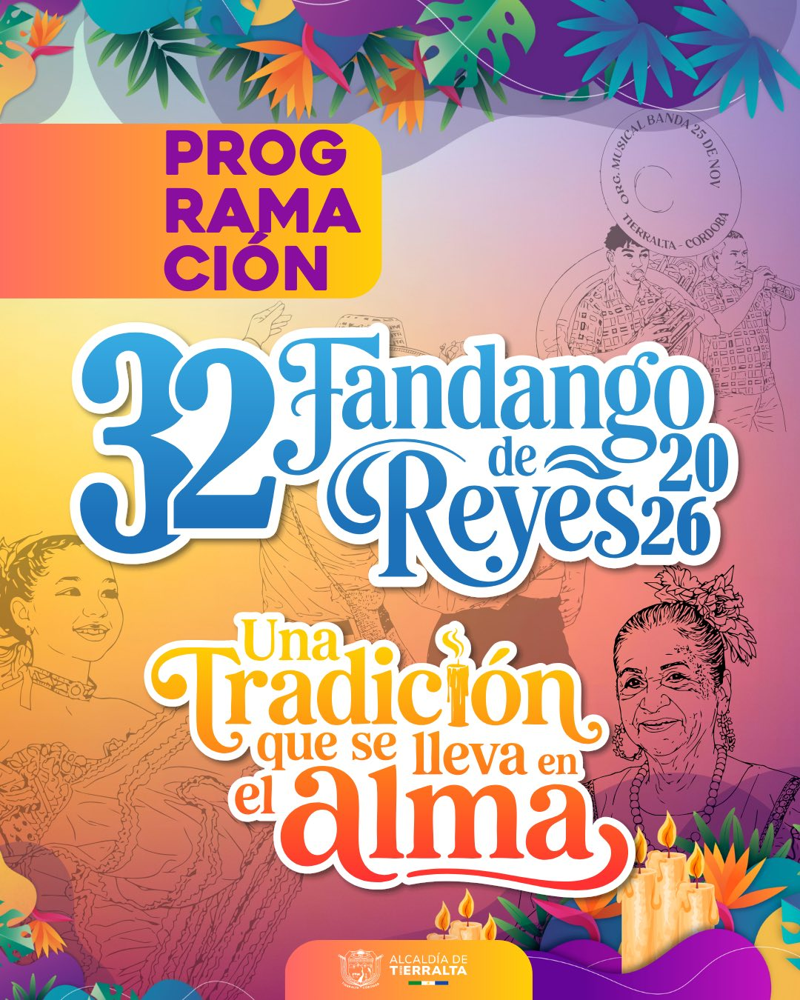
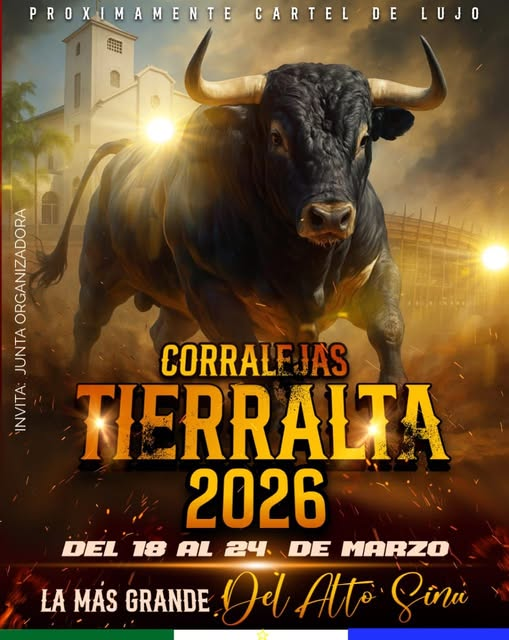
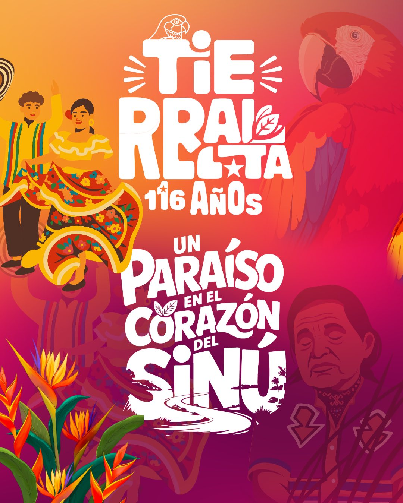
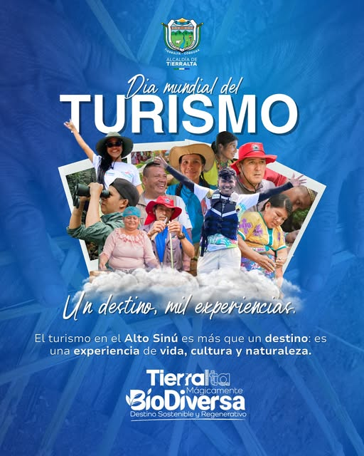

Experience
Tierralta
English
Spanish
Tierralta’s festivals are characterized by their energy, color, and rich folklore. Highlights include the fandango, comparsas (carnival troupes), parades, live music, and the region’s unique livestock traditions.
During these celebrations, thousands of people gather to share, enjoy, and actively participate in activities that showcase the municipality’s cultural identity.

The Fandango of the Three Kings is one of Tierralta’s most important festivities and is celebrated in January. This event features parades ...

Celebrated in March in honor of Saint Joseph, the corralejas are one of the region’s most representative festivities.

In November, the municipality celebrates its anniversary with a wide-ranging cultural and recreational program.

This festival aims to promote sustainable tourism and highlight Tierralta’s cultural heritage.